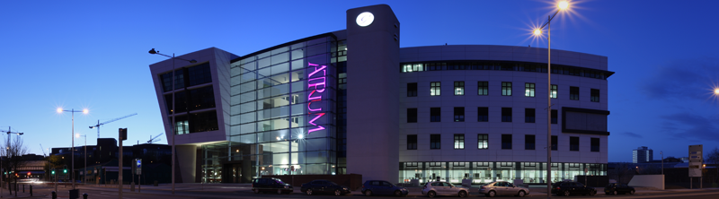

About Us
The Faculty of Creative and Cultural Industries brings together creative disciplines within the University of South Wales.
Our ATRiuM campus is situated in central Cardiff, this specially-designed building contains cutting edge technologies and industry-standard facilities, enabling like-minded individuals from a broad range of subject areas to work together in an environment geared to sharing expertise.
This diverse, multidisciplinary grouping supports a rich cultural and scholarly environment, and provides specialist and hybrid undergraduate, postgraduate and research degree programmes.